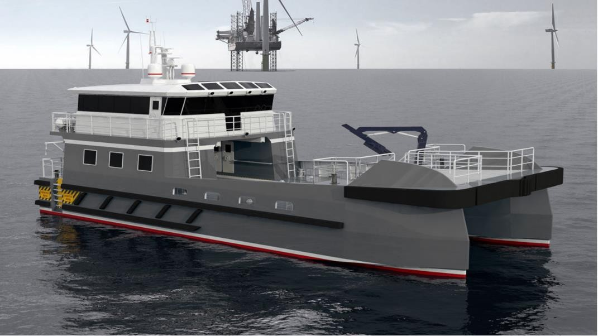
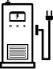

革新海上风电支持
通用能源自豪地推出E-CTV（电动人员转运船）WindGuard系列，这是可持续海上风电支持船领域的突破性进展。这些船舶专为海上风电场的人员转运作业设计，代表了零排放海事支持的未来。
WindGuard系列将尖端电力推进技术与成熟的海事工程相结合，在具有挑战性的海上条件下提供无与伦比的性能、可靠性和环境责任。

E-CTV技术规格和性能特点
WindGuard系列规格
总长
26米/30米变体
型宽
8.5米
吃水
1.8米
人员容量
24名技术人员 + 2名船员
推进功率
2 x 200kW电动机
电池容量
500 kWh锂离子电池
最大航速
25节
运营航程
120海里
先进电力推进系统
E-CTV采用GEES成熟的通用控制系统(GCS)，专门为海上作业优化：
双电动机
2 x 200kW永磁电机，配备直驱螺旋桨
船用电池系统
IP67级锂离子电池，设计用于恶劣海洋环境

快速岸电充电
直流快速充电系统，实现作业间快速周转
智能控制
先进能源管理系统，为海上条件优化
海上风电行业优势
- 零排放： 完全电力运行，消除敏感海洋环境中的柴油排放
- 降低运营成本： 与传统柴油船相比，燃料和维护成本更低
- 静音运行： 对海洋生物和海上工作条件的噪音影响最小
- 天气适应性： 先进船体设计和稳定性系统，确保在挑战性条件下的安全作业
- 船员舒适性： 无振动电力运行提高长时间转运中的船员舒适度
- 可靠性： 更少的运动部件和简化的传动系统减少维护需求
创新设计特点
WindGuard系列包含多项专为海上风电支持作业设计的创新：
安全第一
增强安全系统
运动补偿舷梯系统，确保在挑战性海况下的人员安全转运
舒适设计
船员舒适特性
气候控制舱室，配备符合人体工程学的座椅和设备存储
智能技术
数字集成
物联网传感器，用于预测性维护和实时性能监控
面向未来
自主能力
为未来自主导航系统集成做好准备
市场影响与可持续性
E-CTV WindGuard系列满足海上风电行业对可持续支持船日益增长的需求。随着全球海上风电场的扩展，对环境负责的人员转运解决方案的需求变得日益关键。
通过消除柴油排放和减少运营噪音，WindGuard系列支持海上风电行业对环境管理的承诺，同时提供卓越的运营性能。
全球应用
WindGuard系列设计用于全球各种海上风电市场的部署：
- 欧洲水域： 北海、波罗的海和大西洋海上风电场
- 亚洲市场： 台湾海峡、东海和日本海上开发项目
- 美洲： 美国东海岸和新兴的南美海上风电项目
- 新兴市场： 支持全球新的海上风电开发